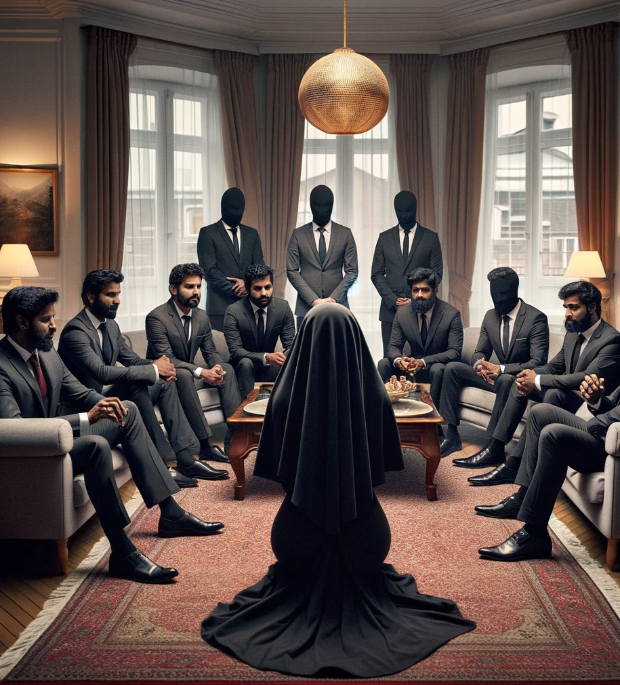
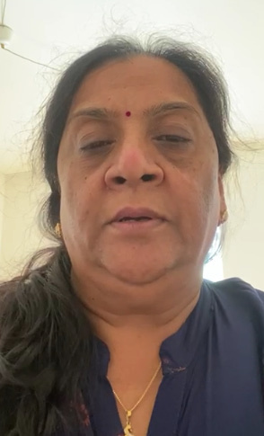

Operation Impersonation:
Operation Impersonation:
Jaffna Monitor hellojaffnamonitor@gmail.com 18 Operation Impersonation: COVER STORY The Story of a Masterful Scam

Jaffna Monitor
hellojaffnamonitor@gmail.com
19
I
n early November 2022, there
was a systematic spread of
news among the wealthy business
community in Switzerland.
The information, disseminated
primarily through word of
mouth, suggested that LTTE
supremo Prabhakaran, his wife
Mathivathani, and daughter
Duwaraka were alive. This rumor
was perpetuated in a coordinated
manner: one individual would
claim to have met Prabhakaran's
family, and another would
corroborate this claim, with both
being part of a group deceiving
people in the name of Prabhakaran.
Subsequently, a group of wealthy
Sri Lankan Tamil businessmen
convened at a residence in
Switzerland upon the request of
former LTTE fund collectors. These
businessmen, known for their
historical support of the Liberation
Tigers of Tamil Eelam (LTTE),
were gathered with the anticipation
of meeting a significant figure.
During this assembly, a woman
with her face and hair obscured by
a veil appeared, introducing herself
as Mathivathani, the wife of LTTE
leader Prabhakaran. She addressed
the business community, revealing
that she, along with her husband
Prabhakaran and daughter, were
alive while her two sons, Charles
Antony and Balachandran, had
perished. She recounted how she,
her husband, and daughter had
escaped from the war zone to
Europe. Emphasizing the need
for support, she implored the
community for funds, stating that
her husband was regrouping the
LTTE and that he was currently
unwell.
Her story painted a vivid picture
of their escape from the war
zone, a perilous journey that had
led them to the relative safety of
Europe. Mathivathani's words
carried a plea for help. When a
curious businessman requested her
to remove her veil to confirm her
identity, she refused, citing security
risks. Despite this, a large portion
of the businessmen present believed
the narrative and immediately
donated substantial sums of money
to aid Prabhakaran's supposed
efforts in regrouping the LTTE and
his medical expenses.
However, one businessman, a
significant former donor to the
LTTE, harbored doubts. Instead of
voicing his skepticism, he requested
a meeting with Prabhakaran. The
veiled woman denied this request,
again citing security concerns.
The businessman then proposed
meeting Duwaraka, promising a
hefty donation if his request was
granted. The woman agreed to this.
In the meantime, the businessman
had obtained credible information
about Duwaraka from a Sothiya
regiment female LTTE fighter living
in London since the 2009 war. This
included the name of Duwaraka's
driving instructor and details about
her active participation in the
LTTE.
After a few days, the businessman
was taken to a safe house to meet
the alleged Duwaraka, also veiled.
She requested large sums for her
father's efforts in reorganizing
the LTTE and mentioned his ill
health. In a friendly manner, the
businessman asked her several
questions based on the information
he had gathered. To his suspicion,
the alleged Duwaraka answered all
the questions incorrectly.
BY:
Kaniyan Pungundran
fzpad; G+q;Fd;wd;
Jaffna Monitor hellojaffnamonitor@gmail.com 20 Realizing the deceit, the businessman amiably exited the meeting, feigning a promise to donate generously. Instead, he alerted the rest of the business community about the scam. However, by this time, many had already donated substantial Swiss money to the cause. Duping Devotees: The Story of a Multi-Million Rupee LTTE Scam in Europe During the final three months of 2022, a noticeable campaign among Sri Lankan Tamils in Swiss cities like Zurich, Bern, and Basel was conducted by former pro-LTTE activists. This campaign keenly targeted the business community and individuals who were fervent LTTE sympathizers or those who idolized Prabhakaran, treating him akin to a demi-god. The strategy was to specifically focus on those with a deep emotional connection to the LTTE and its supreme leader, intentionally excluding the general populace or those without such a connection. The approach was tailored to exploit the emotions of those deeply attached to the LTTE and Prabhakaran, reducing their inclination to question or verify the claims. In intimate group meetings, two women, alleging to be Prabhakaran's wife and daughter and with their faces partly covered, appealed for financial assistance. They claimed that Prabhakaran was actively working on regrouping the LTTE and highlighted his poor health as an urgent matter. Many, swayed by their emotional ties to the cause and its leader, readily opened their wallets to contribute. This pattern of meetings and appeals gradually began to spread to other European countries. Credible sources have informed Jaffna Monitor that, in a relatively brief period, the group implicated in the scam managed to accumulate a staggering sum of approximately 5000 crore Sri Lankan Rupees from unsuspecting LTTE sympathizers. A Saga of Fraud Against the backdrop of these rumors about Prabhakaran planning to revive the LTTE, a person impersonating his daughter, Dwaraka, delivered a speech on Maaveerar Naal (Great Heroes Day). This event added another layer to the unfolding narrative. According to credible sources reported to Jaffna Monitor, the architect of this elaborate fraudulent scheme is Jeevaratnam Jeevakumar, also known as "Chiranjeevi master," a former deputy to the ex-LTTE intelligence chief "Pottu Ammaan." The strategy devised by "master" was allegedly put into action by "Abdullah," previously the financial head for the Swiss Tigers. Abdullah, whose real name is Chelliah Jeyapalan from Aanaikottai in Jaffna, is believed to be the primary coordinator and executor of this deceptive operation. These sources further indicate that the intricacies of this operation suggest the involvement or knowledge of the current Swiss tiger chief, Ragupathy, hinting at a deeper network within the remnants of the LTTE's overseas operations. Betrayal of Trust: How Mathivathani's Family Fueled the LTTE Scam Adding complexity to the scheme, sources have revealed that the Eerampu family, relatives of Prabhakaran's wife Mathivathani, were later convinced to participate in this scam. Reportedly, after receiving a substantial amount of money, they agreed to be part of the operation. Mathivathani's elder sister, Aruna, who lives in London, lent credibility to the claim by asserting that she recently met her sister Mathivathani, brother-in-law Prabhakaran and niece Duwaraga. Although the authenticity of her testimony is questionable, it comes from Prabhakaran's family and adds significant weight to the scam. Mathivathani's elder brother, Sreetharan, who lives in Denmark, is also implicated in this scam. Other individuals named by sources include Nimalan, Varadhan, and Mithulan from Prabhakaran's bodyguard unit; Jayakanthan, who was in charge of the unit; Siriskandaraja Ranjith from Varathupalaya, known as Cheraman in Britain; and a major contributor, the individual posing as the fake Dwarka. These revelations suggest a complex and well- orchestrated scheme involving multiple individuals with connections to the LTTE. Aruna sreetharan
